01 / ПРОВЕРЕНGrooveМеханический счётчик читается; тонарм, шкала и кнопки согласованы.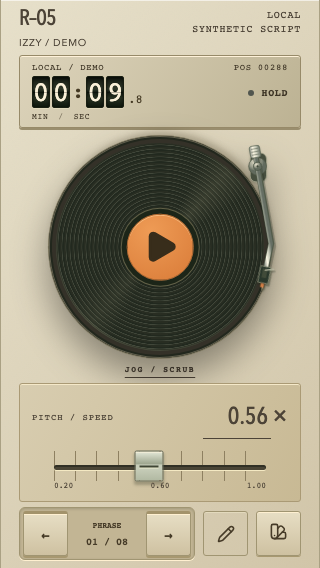Открыть пульт ↗
02 / ПРОВЕРЕНClearТочечные цифры чистые; подсветка и элементы корпуса не заходят в текст.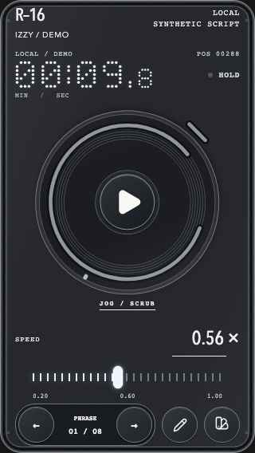Открыть пульт ↗
03 / ПРОВЕРЕНArcadeПиксельное табло и вертикальный регулятор составляют единый аркадный прибор.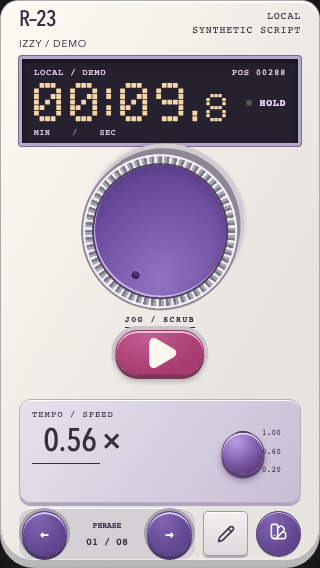Открыть пульт ↗
04 / ПРОВЕРЕНField ReelСегментный дисплей и гравированный Play; тихий вариант без лишней механики.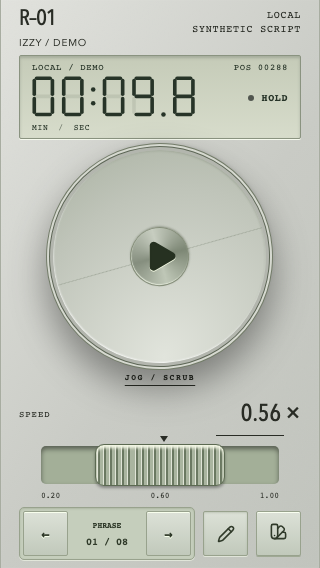Открыть пульт ↗
05 / ПРОВЕРЕНSignalТёплый сегментный экран, круглый Play и рычаг скорости согласованы.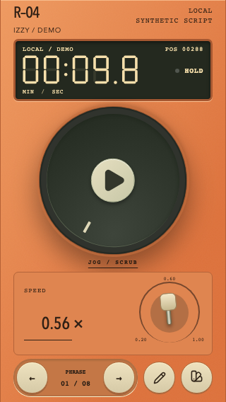Открыть пульт ↗
06 / ПРОВЕРЕНVectorФосфорная строка и радар сохраняют иерархию; данные читаются без свечения.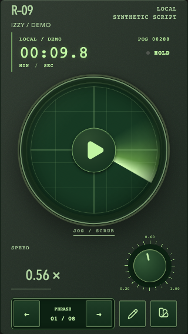Открыть пульт ↗
07 / ПРОВЕРЕНCartridgeПиксельный экран, слот и вертикальный регулятор помещаются в корпус.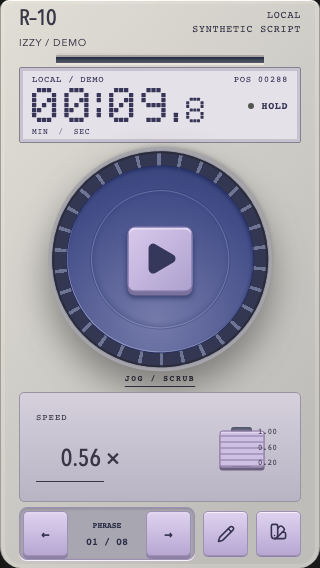Открыть пульт ↗
08 / ПРОВЕРЕНSwitchboardСветлый счётчик и телефонная шкала; неподвижная пластина номеров сохранена.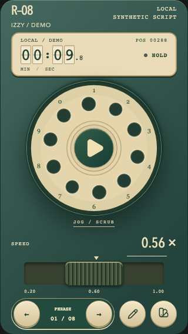Открыть пульт ↗
09 / ПРОВЕРЕНCorrespondentСчётчик в видоискателе и латунный регулятор поддерживают эстетику камеры.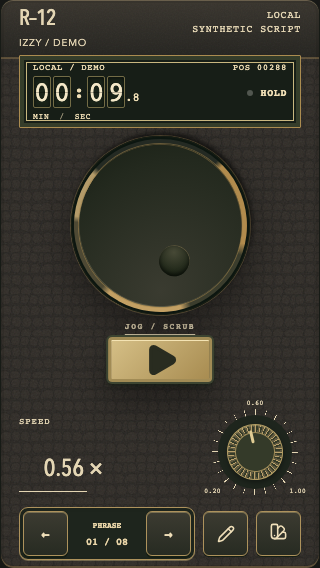Открыть пульт ↗
10 / ПРОВЕРЕНFoundryМеханический счётчик, зубчатая передача и каретка образуют один механизм.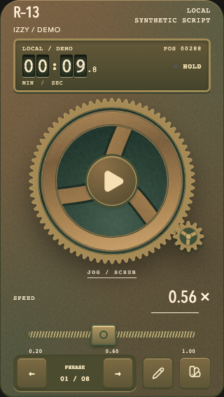Открыть пульт ↗
11 / ПРОВЕРЕНObservatoryИсправлен: крупный хронометр, секундный подциферблат, три эллиптические орбиты.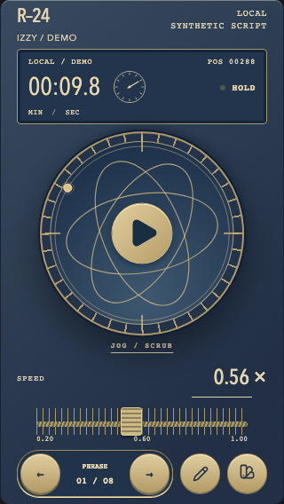Открыть пульт ↗
12 / ПРОВЕРЕНOrbitЧистая типографика и керамическая ручка; спокойная альтернатива тематическим.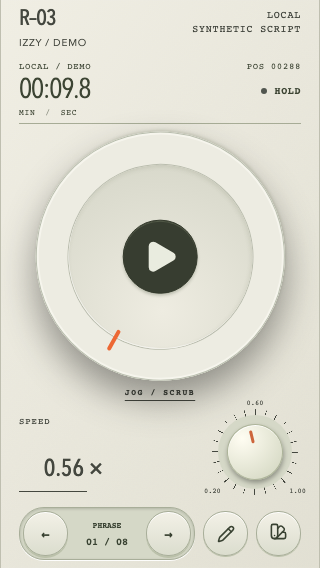Открыть пульт ↗
13 / ПРОВЕРЕНThumbprintРаздельные минуты/секунды и тактильная ручка; единицы однозначны.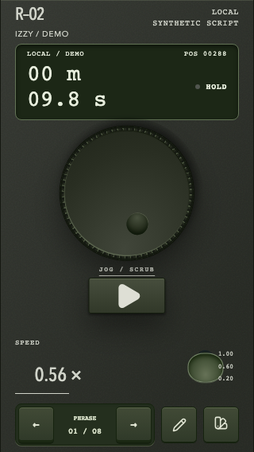Открыть пульт ↗
14 / ПРОВЕРЕНOriginalСдержанная база. Исправлен выход строчных цифр за высоту табло в landscape.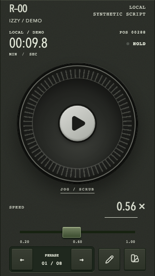Открыть пульт ↗